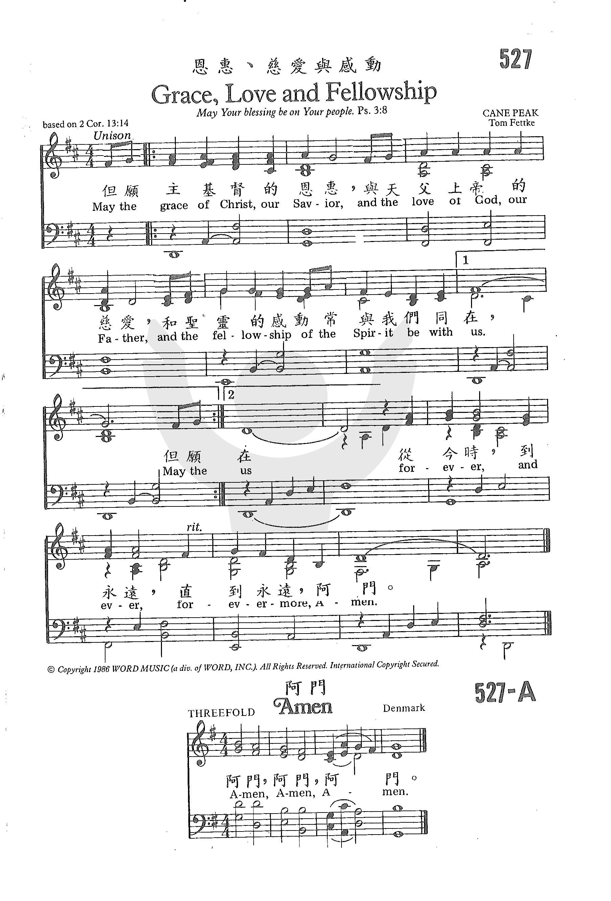

|
|
|
|
但願主基督的恩惠, |
|
|
https://www.zanmeishige.com/tab/26099.html?songbook=1&index=527

|
|
|
|
|

0986 Grace Love and Fellowship _Tom Fettke 恩惠、慈爱与感动 ●
|
|
|
|
但願主基督的恩惠, |
|
|
https://www.zanmeishige.com/tab/26099.html?songbook=1&index=527

|
|
|
|
|

哥林多後書 13:14 2 Corinthians 13:14
| Text: | Grace, Love and Fellowship |
| Author: | Tom Fettke |
| Tune: | CANE PEAK |
| Composer: | Tom Fettke |
| Short Name: | Tom Fettke |
| Full Name: | Fettke, Tom, 1941- |
| Birth Year: | 1941 |
Thomas E. Fettke (b. Bronx, New York City, 1941)

Educated at Oakland City College and California State University, in Hayward, CA, Fettke has taught in several public and Christian high schools and served as minister of music in various churches, all in California. He has published over eight hundred compositions and arrangements (some under the pseudonyms Robert F. Douglas and David J. Allen) and produced a number of recordings. Fettke was the senior editor of The Hymnal for Worship and Celebration (1986).
Bert Polman
| Title: | CANE PEAK |
| Composer: | Tom Fettke |
| Meter: | Irregular |
| Incipit: | 34555 55434 55555 |
| Key: | D Major |
| Copyright: | © 1986 by Word Music (a div. of WORD MUSIC) |
每個人的一生都會經歷很多事情，其中滿了酸甜苦辣，在臨到苦難的時候，都會有脆弱的一面，都希望得到鼓勵和安慰。下面分享的關於祝福的聖經經文，希望能給你和你身邊的朋友帶去鼓勵和安慰。
願耶和華賜福給你，保護你。願耶和華使他的臉光照你，賜恩給你。願耶和華向你仰臉，賜你平安。
願造天地的耶和華，從錫安賜福給你們！
願耶和華從錫安賜福給你！願你一生一世看見耶路撒冷的好處！
願主耶穌基督的恩惠、神的慈愛、聖靈的感動，常與你們眾人同在！
我們務要認識耶和華，竭力追求認識他。他出現確如晨光，他必臨到我們像甘雨，像滋潤田地的春雨。
你若留意聽從耶和華——你神的話，謹守遵行他的一切誡命，就是我今日所吩咐你的，他必使你超乎天下萬民之上。你若聽從耶和華——你神的話，這以下的福必追隨你，臨到你身上：你在城裡必蒙福，在田間也必蒙福。你身所生的，地所產的，牲畜所下的，以及牛犢、羊羔，都必蒙福。你的筐子和你的摶麵盆都必蒙福。你出也蒙福，入也蒙福。
提到神的祝福，很多人都認為一生平平安安、快快樂樂、衣食無憂、家庭美滿幸福就是神的祝福，還有的人認為得著各種恩賜能為主作工講道是神的祝福，那神的祝福就只是這些嗎？如果我們臨到一些試煉或不如意的事，這是不是神的祝福呢？神祝福人的方式有很多，閱讀以下經文和相關文章幫你全面了解神的祝福。
（大衛的詩。）耶和華是我的牧者，我必不至缺乏。他使我躺臥在青草地上，領我在可安歇的水邊。他使我的靈魂甦醒，為自己的名引導我走義路。我雖然行過死蔭的幽谷，也不怕遭害，因為你與我同在；你的杖，你的竿，都安慰我。在我敵人面前，你為我擺設筵席；你用油膏了我的頭，使我的福杯滿溢。我一生一世必有恩惠慈愛隨著我；我且要住在耶和華的殿中，直到永遠。
忍受試探的人是有福的，因為他經過試驗以後，必得生命的冠冕；這是主應許給那些愛他之人的。
你既遵守我忍耐的道，我必在普天下人受試煉的時候，保守你免去你的試煉。
聖靈向眾教會所說的話，凡有耳的，就應當聽！得勝的，我必將神樂園中生命樹的果子賜給他吃。
凡得勝的必這樣穿白衣，我也必不從生命冊上塗抹他的名；且要在我父面前，和我父眾使者面前，認他的名。
我聽見有大聲音從寶座出來說：「看哪，神的帳幕在人間。他要與人同住，他們要做他的子民。神要親自與他們同在，作他們的神。神要擦去他們一切的眼淚，不再有死亡，也不再有悲哀、哭嚎、疼痛，因為以前的事都過去了。」
天使又指示我在城內街道當中一道生命水的河，明亮如水晶，從神和羔羊的寶座流出來。在河這邊與那邊有生命樹，結十二樣果子，每月都結果子，樹上的葉子乃為醫治萬民。以後再沒有咒詛。在城裡有神和羔羊的寶座，他的僕人都要事奉他，也要見他的面。他的名字必寫在他們的額上。不再有黑夜。他們也不用燈光、日光，因為主神要光照他們，他們要作王，直到永永遠遠。
主所應許我們的就是永生。
那牧师的祝福为什么不加“奉主耶稣的名求，阿们”呢？ 直接说：“愿……”呢？主要有以下几方面原因：
第一方面：崇拜中上帝的仆人，牧者作为上帝的出口、是祝福的管道。我们都知道证道是代表神进行宣讲，与属灵幽暗世界进行争战，圣灵也籍着他仆人口里的话语作自己的工作，所以牧者祝福是代表神在宣讲，是直接的“神对人”，而不是代求。
第二方面牧者作为被教会全体信众所公认，并经历老牧者代代相传的按手，有其圣统的合法性和延续性。他在结尾的祝福属于祝祷，是以旧约亚伦祭司举手为以色列百姓祝福为参照。 祝福的词语也是耶和华上帝亲自晓谕摩西说“愿耶和华赐福给你，保护你”（参民6：22），圣经时常记载摩西也举手祷告，特别是摩西举手约书亚就得胜的场景更是深入人心，但在利未记9章膏立亚伦作祭司后，22节记载“亚伦向百姓举手，为他们祝福”。神也亲自显现印证了他对亚伦权柄的授权。
第三方面，新约圣经时常说“愿主耶稣基督的恩惠……”也出自使徒保罗和使徒约翰书信。 约翰作为神所爱的门徒，作为使徒权柄肯定毋庸置疑，我们知道保罗是神所重用的仆人，但他并不是耶稣在世三年半的直接跟随者。保罗在当时代所受的最大攻击就是他的“使徒身份和权柄问题”。 但是以他的建立教会的“丰功伟绩”他大可以自封使徒、牧师、长老，但是他没有。因教会是合一的整体，他所建立的哥林多教会和耶路撒冷教会都是一个教会，都是联于元首耶稣基督。保罗的使徒权柄除了神直接带领外，也最主要也还经过当时代教会特别是在世使徒的印证。 所以保罗并没有为了“权柄”而自封。保罗自己在《加拉太书》第二章9节说：“那称为教会柱石的雅各、矶法、约翰，就向我和巴拿巴用右手行相交之礼，叫我们往外邦人那里去，他们往受割礼的人那里去。”也印证，他的属灵权柄和侍奉是受圣灵和教会的双重差派。 今天教会混乱的原因就是这双重差派的缺失，有人自称神特别的按立却没有教会承认他，有人是的姊妹的公推但没有神的呼召。言归正传，保罗和约翰因使徒身份，他们大可以代表神而祝福。
回到我们老同工引用的经文，保罗劝提摩太“为万人代求、祝谢”。要清楚提摩太也是有从神而来的权柄和恩赐的人“你不要轻忽所得的恩赐，就是从前藉著预言、在众长老按手的时候赐给你的。”（提前4:14）。
http://ms.jdjh.org/muhanfenxiang/46.html
美國作曲家Tom Fettke有過千首已出版發行或錄音的樂曲，而此曲更是他其中一首最聞名的作品，曾被世界各地不同的教會及學校合唱團獻唱。他除了是位指揮、編曲、錄音監製，亦是The Hymnal for Worship and Celebration及The Celebration Hymnal的編輯。
樂曲由鋼琴開始帶出氣氛，可用較自由的彈法帶出寂靜的空間感覺。人聲進入的部分同樣亦可較自由的頌唱，部與部之間互相呼應。直至17小節才出現較穩定的速度。從34小節開始可慢慢建立情緒及張力至42小節，然後立即放鬆，造成強烈對比。68小節開始，節奏及速度要漸漸加快及加強，直至全曲的高峯(73至75小節)。全曲的速度及力量都有很多彈性，極需鋼琴伴奏積極的參與及緊密的配合。
https://choirdb.hk/product/the-majesty-and-glory-of-your-name/